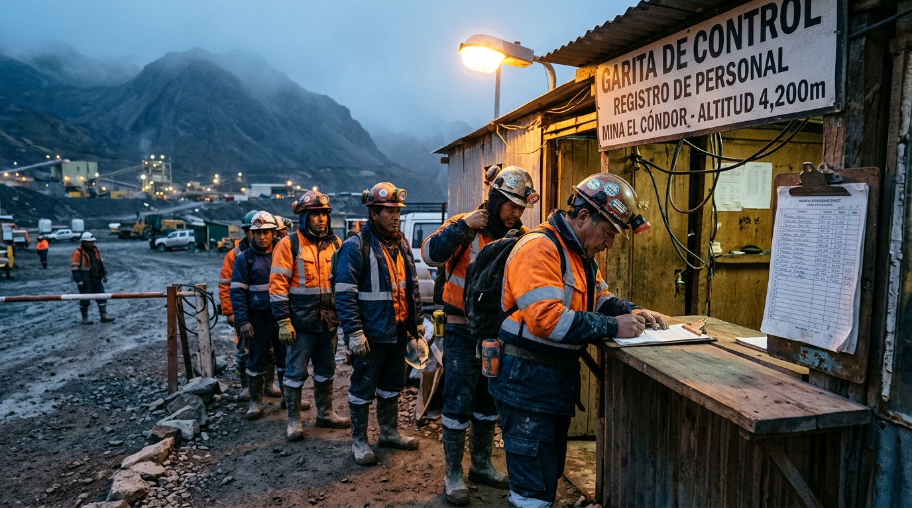
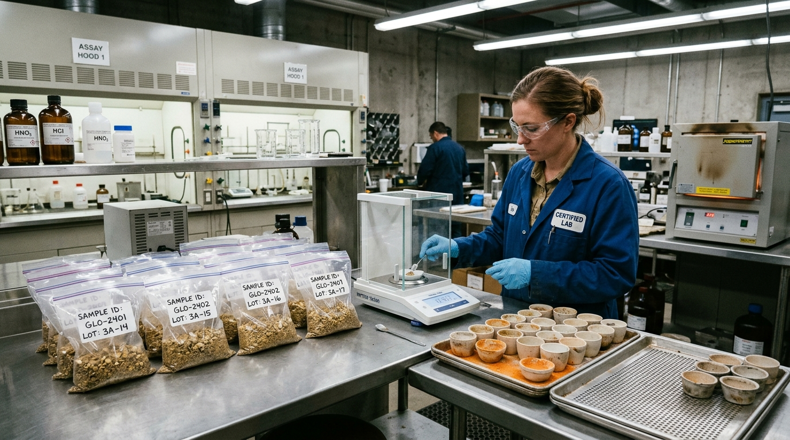
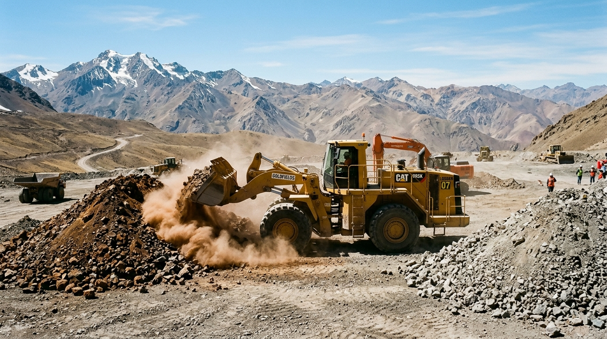

Sin funciones innecesarias
Cada pantalla resuelve una tarea específica en pocos segundos. Menos clics, cero confusiones.

Personal, almacén, maquinaria y mineral en una sola plataforma. Sin cuadernos, sin hojas de cálculo, sin cruces manuales.
Las operaciones mineras no pueden detenerse por sistemas complicados. SCOM reemplaza cuadernos, hojas de cálculo y cruces manuales por una sola base de datos confiable, hecha para quien trabaja en campamento, almacén y socavón.
procesos mineros cubiertos de punta a punta
frentes de control: personal, logística, activos y producción
base de datos compartida por gerencia, contabilidad y almacén
Cada pantalla resuelve una tarea específica en pocos segundos. Menos clics, cero confusiones.
Operación continua en zonas con señal inestable, con sincronización automática en la nube.
Capacitamos a tu equipo y nos adaptamos a la escala real de tu operación.

Se acabaron las carpetas con papeles y las dudas con el tareo. Contratos con adendas trazables, guardias programadas y asistencia diaria por fotocheck o QR.

Los contratistas piden materiales con límite por labor y el almacenero despacha con firma digital. Si falta stock, el sistema genera el pedido o el préstamo entre faenas.

Scoops, volquetes y generadores monitoreados día a día: horas, combustible y mantenimiento por horas acumuladas, antes de que fallen en pleno socavón.

Lotes identificados por contrata, camiones pesados con tara y bruto, leyes de laboratorio, simulador de blending y liquidación transparente con la comercializadora.
Cada pantalla nace de una situación real de mina: la garita, el almacén, la balanza, el laboratorio.






Mira cómo se ingresan los datos en pantalla y cómo queda resuelta cada situación del día a día.
Diseño y arquitectura de plataformas web, móviles y empresariales adaptadas exactamente a los flujos y normativas de tu negocio.
Hardware + Software
Conexión directa del software con balanzas camioneras, sensores de combustible y lectores de código QR/RFID.
Acompañamos a tu empresa del papel y las hojas de cálculo hacia bases de datos centralizadas, capacitando a supervisores, almaceneros y personal administrativo. Sin traumas en la transición.
Coordinamos una demostración personalizada de SCOM o evaluamos el desarrollo a medida que tu empresa necesita. Sin compromiso y directo al grano.